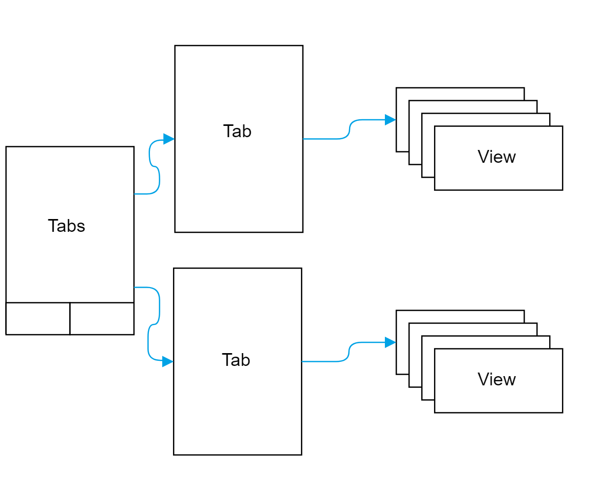

Introduction to Ionic 3
Guy Nesher
Developer at Codevalue
Hybrid Applications
- Just a Web Application
- Running in a browser
- Within a Native Mobile Application
Ionic Application Scheme
Ionic
Browser

Cordova*
Ionic Is
- A Set Of Mobile Friendly UI Components
- A CLI
- A Set Of Plugins For Native Functionality
UI Components
- Large Set Of Components
- Built In Theme Support (via SASS)
- Specific OS Design
- Excelent Documentation
Modern CLI
- Powered by NPM / Webpack
- Wraps the Angular CLI (with minor changes)
- Wraps the Cordova CLI
npm install -g cordova ionicionic start myApp tabsPlugins
- Large List Of Plugins For (almost) Every Usecase
- Easy To Install / Manage
- Curated - Support Level Varies
But What About Performance
Ionic Component / Page
Title
Sub Title
// you code goes here
Navigation
Ion Content
- A Simple Wrapper For Content
- Exposes Helpful Methods & Properties:
- Scrolling
- Resizing
- Theme Design
Finding The Sweet Spot
- Perfect for CRUD applications
- Access Native Capabilities - Through Plugins
- Try To Avoid Heavy Processing / Complex Animations
- Multiple Apps Have Been Featured in Apples Best Of The Year Lists
Using Plugins
npm install @ionic-native/camera --saveionic cordova plugin add cordova-plugin-camera- Contain Two Parts:
- Ionic Container
- Cordova Plugin
- Plugins Are Angular Services
- Can Be Treated As Promies Or Observables